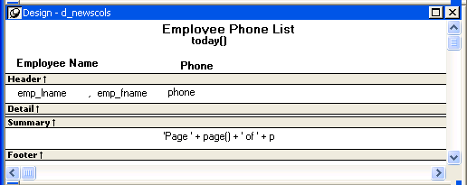
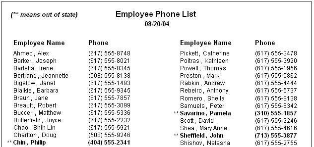

This section describes the general DataWindow object properties that you can modify.
The general style properties for a DataWindow object include:
PowerBuilder assigns defaults when it generates the basic DataWindow object. You can change the defaults.
 To change the default style properties:
To change the default style properties:
Position the pointer in the background of the DataWindow object, display the pop-up menu, and select Properties.
The Properties view displays with the General page on top.
Click the unit of measure you want to use to specify distances when working with the DataWindow object:
 Choosing the unit of measure If you plan to print the contents of the DataWindow object at runtime, change
the unit of measure to inches or centimeters to make it easier to specify
the margin measurements.
Choosing the unit of measure If you plan to print the contents of the DataWindow object at runtime, change
the unit of measure to inches or centimeters to make it easier to specify
the margin measurements.
Specify the number of milliseconds you want between internal timer events in the DataWindow object.
This value determines how often PowerBuilder updates the time fields in the DataWindow object. (Enter 60,000 milliseconds to specify one minute.)
Select a background color from the Color drop-down list and click OK. The default color is the window background color.
You can set different colors for each element of a DataWindow object to enhance the display of information.
 To set the background color in a DataWindow object:
To set the background color in a DataWindow object:
Position the mouse on an empty spot in the DataWindow object, display the pop-up menu, and select Properties.
On the General page in the Properties view for the DataWindow object, select a color from the Color drop-down list.
 To set the color of a band in a DataWindow object:
To set the color of a band in a DataWindow object:
Position the mouse pointer on the bar that represents the band, display the pop-up menu, then select Properties.
On the General page in the band's Properties view, select a color from the Color drop-down list.
The choice you make here overrides the background color for the DataWindow object.
 To set colors in controls in a DataWindow object:
To set colors in controls in a DataWindow object:
Position the mouse pointer on the control, display the pop-up menu, then select Properties.
For controls that use text, you can set colors for background and text on the Font page in the Properties view. For drawing controls, you can set colors on the General page in the Properties view.
In grid DataWindow objects, you can specify:
 To specify basic grid DataWindow object properties:
To specify basic grid DataWindow object properties:
Position the mouse pointer on the background in a grid DataWindow object, display the pop-up menu, and select Properties.
Select the options you want in the Grid section on the General page in the Properties view as described in Table 19-3.
Just as with colors, you can specify different pointers to use when the mouse is over a particular area of the DataWindow object. For example, you might want to change the pointer when the mouse is over a column whose data cannot be changed.
 To change the mouse pointer used at runtime:
To change the mouse pointer used at runtime:
Position the mouse over the element of the DataWindow object whose pointer you want to define, display the pop-up menu, and select Properties to display the appropriate Properties view.
You can set a pointer for the entire DataWindow object, specific bands, and specific controls.
Select the Pointer tab.
Either choose the pointer from the Stock Pointers list or, if you have a file containing pointer definitions (CUR files), enter a pointer file name.
You can use the Browse button to search for the file.
Click OK.
When you are satisfied with the look of the DataWindow object, you can define its print specifications.
 To define print specifications for a DataWindow object:
To define print specifications for a DataWindow object:
In the DataWindow painter, select Properties from the DataWindow object's pop-up menu to display the DataWindow object's Properties view.
In the Units box on the General page, select a unit of measure.
It is easier to specify the margins when the unit of measure is inches or centimeters.
Select the Print Specifications tab.
The Print Specifications page uses the units of measure you specified on the General page.
Specify print specifications for the current DataWindow object.
See Table 19-4 for more information.
| Setting | Description |
|---|---|
| Document Name | Specify a name to be used in the print queue to identify the report. |
| Printer Name | Specify the name of a printer to which this report should be sent. If this box is empty, the report is sent to the default system printer. If the specified printer cannot be found, the report is sent to the default system printer if the Can Use Default Printer check box is selected. If the specified printer cannot be found and the Can Use Default Printer check box is not selected, an error is returned. |
| Margins | Specify top, bottom, left, and right margins. You can also change margins in the Preview view while you are actually looking at data. If you change margins in the Preview view, the changes are reflected here on the Print Specifications page. |
| Paper Orientation | Choose one of the following:
|
| Paper Size | Choose a paper size or leave blank to use the default. |
| Paper Source | Choose a paper source or leave blank to use the default. |
| Prompt Before Printing | Select to display the standard Print Setup dialog box each time users make a print request. |
| Can Use Default Printer | Clear this check box if a printer has been specified in the Printer Name box and you do not want the report to be sent to the default system printer if the specified printer cannot be found. This box is checked by default if a printer name is specified. |
| Display Buttons - Print Preview | Select to display Button controls in Print Preview. The default is to hide them. |
| Display Buttons - Print | Select to display Button controls when you print the report. The default is to hide them. |
| Clip Text | Select to clip static text to the dimensions of a text field when the text field has no visible border setting. The text is always clipped if the text field has visible borders. |
| Override Print Job | When you print a series of reports using the PrintOpen, PrintDataWindow, and PrintClose methods, all the reports in the print job use the layout, fonts, margins, and other print specifications defined for the computer. Select this check box to override the default print job settings and use the print settings defined for this report. |
| Collate Copies | Select to collate copies when printing. Collating increases print time because the print operation is repeated to produce collated sets. |
| Newspaper Columns Across and Width | If you want a multiple-column report where the data fills one column on a page, then the second, and so on, as in a newspaper, select the number and width of the columns in the Newspaper Columns boxes. See "Printing with newspaper-style columns". |
When you define a DataWindow object, you can specify that it print in multiple columns across the page, like a newspaper. A typical use of newspaper-style columns is a phone list, where you want to have more than one column of names on a printed page.
 Use Print Preview to see the printed output Newspaper-style columns are used only when the DataWindow object is printed.
They do not appear when a DataWindow object executes (or in Preview). Therefore,
to see them in PowerBuilder, use Print Preview in the DataWindow painter.
Use Print Preview to see the printed output Newspaper-style columns are used only when the DataWindow object is printed.
They do not appear when a DataWindow object executes (or in Preview). Therefore,
to see them in PowerBuilder, use Print Preview in the DataWindow painter.
 To define newspaper-style columns for a DataWindow object:
To define newspaper-style columns for a DataWindow object:
Build a tabular DataWindow object with the data you want.
Select Properties from the DataWindow object's pop-up menu.
Select the Print Specifications tab.
Specify the number of columns across the page and the width of columns in the Newspaper Columns Across and Newspaper Columns Width properties.
For each control in the DataWindow object that you do not want to have appear multiple times on the page (such as headers), select Properties from the control's pop-up menu and select the HideSnaked check box on the General page in the Properties view.
This example describes how to create a newspaper-style DataWindow object using the Employee table in the EAS Demo DB.

The finished DataWindow object has one set of page heading information and two columns of column header and detail information.

When PowerBuilder initially generates the basic DataWindow object, it uses the following attributes and fonts:
You can override any of these defaults in a particular DataWindow object.
 To change text in a DataWindow object:
To change text in a DataWindow object:
Select the text.
The first box in the StyleBar is now active.
Type the new text.
Use ~n~r to embed a newline character in the text.
 To change the text properties for a text control
in a DataWindow object:
To change the text properties for a text control
in a DataWindow object:
Select the text control.
When PowerBuilder generates the basic DataWindow object, it assigns columns a default tab order, the default sequence in which focus moves from column to column when a user presses the Tab key at runtime. PowerBuilder assigns tab values in increments of 10 in left-to-right and top-to-bottom order.
 Tab order is not used in the Design view Tab order is used when a DataWindow object is executed, but it is
not used in the DataWindow painter Design view. In the Design view, the
Tab key moves to the controls in the DataWindow object in the order in
which the controls were placed in the Design view.
Tab order is not used in the Design view Tab order is used when a DataWindow object is executed, but it is
not used in the DataWindow painter Design view. In the Design view, the
Tab key moves to the controls in the DataWindow object in the order in
which the controls were placed in the Design view.
If you are defining a DataWindow object with more than one table, PowerBuilder assigns each column a tab value of 0, meaning the user cannot tab to the column. This is because, by default, multitable DataWindow objects are not updatable—users cannot modify data in them. You can change the tab values to nonzero values to allow tabbing in these DataWindow objects.
For more about controlling updates in a DataWindow object, see Chapter 21, "Controlling Updates in DataWindow Objects."
 Tab order changes have no effect in grid DataWindow objects In a grid DataWindow object, the tab sequence is always left to right
(except on right-to-left operating systems). Changing the tab value
to any number other than 0 has no effect.
Tab order changes have no effect in grid DataWindow objects In a grid DataWindow object, the tab sequence is always left to right
(except on right-to-left operating systems). Changing the tab value
to any number other than 0 has no effect.
 To change the tab order:
To change the tab order:
Select Format>Tab Order from the menu bar or click the Tab Order button on PainterBar2.
The current tab order displays.
Use the mouse or the Tab key to move the pointer to the tab value you want to change.
Enter a new tab value in the range 0 to 9999.
0 removes the column from the tab order (the user cannot tab to the column). It does not matter exactly what value you use (other than 0); all that matters is relative value. For example, if you want the user to tab to column B after column A but before column C, set the tab value for column B so it is between the value for column A and the value for column C.
Repeat the procedure until you have the tab order you want.
Select Format>Tab Order from the menu bar or click the Tab Order button again.
PowerBuilder saves the tab order.
Each time you select Tab Order, PowerBuilder reassigns tab values to include any columns that have been added to the DataWindow object and to allow space to insert new columns in the tab order.
 Changing tab order at runtime To change tab order programmatically at runtime, use the SetTabOrder method.
Changing tab order at runtime To change tab order programmatically at runtime, use the SetTabOrder method.
You use names to identify columns and other controls in validation rules, filters, PowerScript functions, and DataWindow expression functions.
The DataWindow painter automatically generates names for all controls in a DataWindow object. To name columns, labels, and headings, the DataWindow painter uses database and extended attribute information. To name all other controls, it uses a system of prefixes. You can control the prefixes used for automatic name generation and you can specify the name of any control explicitly.
 To specify prefixes for naming controls systematically
in a DataWindow object:
To specify prefixes for naming controls systematically
in a DataWindow object:
Select Design>Options from the menu bar and then select the Prefixes tab.
Change prefixes as desired and click OK.
 To specify a name of a control in a DataWindow object:
To specify a name of a control in a DataWindow object:
Select Properties from the control's pop-up menu and then select the General tab in the Properties view.
Type the name in the Name box.
You can place borders around text, columns, graphs, and crosstabs to enhance their appearance. PowerBuilder provides six types of borders: Underline, Box, ResizeBorder, ShadowBox, Raised, and Lowered:
 Border appearance varies Changing the border style may not have the same effect on
all Windows platforms.
Border appearance varies Changing the border style may not have the same effect on
all Windows platforms.
 To add a border to a control in a DataWindow object:
To add a border to a control in a DataWindow object:
Select one or more controls.
Select the border you want from the Border drop-down toolbar in the PainterBar.
PowerBuilder places the border around the selected controls.
You can also specify a border for one or more controls in the Properties view on the General page.
Sometimes DataWindow objects contain columns whose data is of variable length. For example, a Memo column in a table might be a character column that can take up to several thousand characters. Reserving space for that much information for the column in the detail band would make the detail band's height very large, meaning users could see few rows at a time.
The detail band can resize based on the data in the Memo column. If the Memo column has only one line of text, the detail band should be one line. If the Memo column has 20 lines of text, the detail band should be 20 lines high.
To provide a band that resizes as needed, specify that the variable-length columns and the band have Autosize Height. All bands in the DataWindow can be resized, but nested report overflow is supported only in the Detail band. If autosizing would preclude the display of at least one Detail band row per page, other bands cannot be autosized. Autosizing is not supported with the Graph, RichText, OLE, or Label presentation styles.
 To create a resizable band in a DataWindow object:
To create a resizable band in a DataWindow object:
Select Properties from the pop-up menu of a column that should resize based on the amount of data.
Select the Autosize Height check box on the Position page.
Clear the Auto Horz Scroll check box on the Edit page.
PowerBuilder wraps text in the Preview view instead of displaying text on one scrollable line.
Repeat steps 1 to 3 for any other columns that should resize.
Select Properties from the band's pop-up menu.
Select the Autosize Height check box on the General page.
In the Preview view, the band resizes based on the contents of the columns you defined as having Autosize Height.
When a detail band has Autosize Height set to true, you should avoid using the RowHeight DataWindow expression function to set the height of any element in the row. Doing so can result in a logical inconsistency between the height of the row and the height of the element. If you need to use RowHeight, you must set the Y coordinate of the element to 0 on the Position page in the Properties view, otherwise the bottom of the element might be clipped. You must do this for every element that uses such an expression. If you move any elements in the band, make sure that their Y coordinates are still set to 0.
You should not use an expression whose runtime value is greater than the value returned by RowHeight. For example, you should not set the height of a column to rowheight() + 30. Such an expression produces unpredictable results at runtime.
 Clipping columns You can have Autosize Height columns without an Autosize Height
detail band. If such a column expands beyond the size of the detail
band in the Preview view, it is clipped.
Clipping columns You can have Autosize Height columns without an Autosize Height
detail band. If such a column expands beyond the size of the detail
band in the Preview view, it is clipped.
When modifying a DataWindow object, you might realize that you have not included all the columns you need, or you might need to define retrieval arguments. You can modify the data source from the DataWindow painter. How you do it depends on the data source.
If the data source is SQL (such as Quick Select, SQL Select, or Query), you can graphically modify the SQL SELECT statement.
 To modify a SQL data
source:
To modify a SQL data
source:
Select Design>Data Source from the menu bar.
PowerBuilder returns you to the SQL Select painter. (If you used Quick Select to define the data source, this might be the first time you have seen the SQL Select painter.)
Modify the SELECT statement graphically using the same techniques as when creating it.
For more information, see "Using SQL Select".
 Modifying the statement syntactically Select Design>Convert to Syntax from the menu bar
to modify the SELECT statement syntactically.
Modifying the statement syntactically Select Design>Convert to Syntax from the menu bar
to modify the SELECT statement syntactically.
Click the Return button to return to the painter.
Some changes you make (such as adding or removing columns) require PowerBuilder to modify the update capabilities of the DataWindow object.
For more information about controlling updates in a DataWindow object, see Chapter 21, "Controlling Updates in DataWindow Objects."
 Changing the table If you change the table referenced in the SELECT statement, PowerBuilder maintains
the columns in the Design view (now from a different table) only
if they match the data types and order of the columns in the original
table.
Changing the table If you change the table referenced in the SELECT statement, PowerBuilder maintains
the columns in the Design view (now from a different table) only
if they match the data types and order of the columns in the original
table.
You can add, modify, or delete retrieval arguments when modifying your data source.
 To modify the retrieval arguments:
To modify the retrieval arguments:
In the SQL Select painter, select Design>Retrieval Arguments from the menu bar.
The Specify Retrieval Arguments dialog box displays, listing the existing arguments.
Add, modify, or delete the arguments.
Click OK.
You return to the SQL Select painter, or to the text window displaying the SELECT statement if you are modifying the SQL syntactically.
Reference any new arguments in the WHERE or HAVING clause of the SELECT statement.
For more information about retrieval arguments, see Chapter 18, "Defining DataWindow Objects ."
If the data source is External or Stored Procedure, you can modify the result set description.
 To modify a result set:
To modify a result set:
If the Column Specification view is not open, select View>Column Specifications from the menu bar.
Review the specifications and make any necessary changes.
If you are modifying the result set for a DataWindow object whose data source is a stored procedure, the pop-up menu for the Column Specification view contains the menu item Stored Procedure.
Select Stored Procedure from the Column Specification view's pop-up menu to edit the Execute statement, select another stored procedure, or add retrieval arguments. For more information about editing the Execute statement, see "Using Stored Procedure".